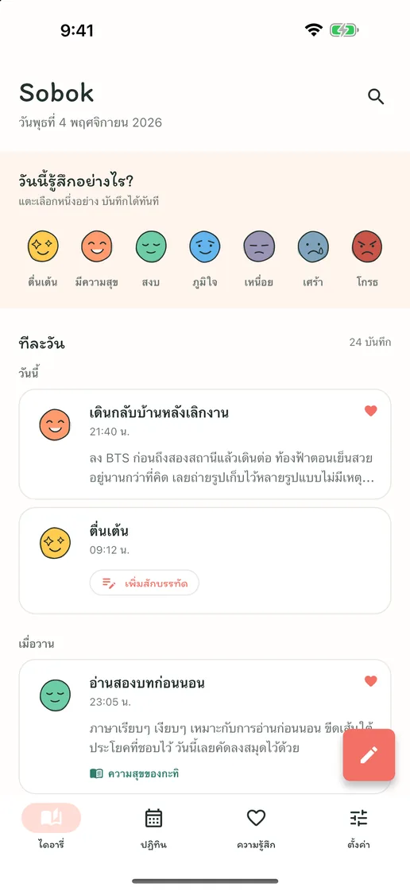
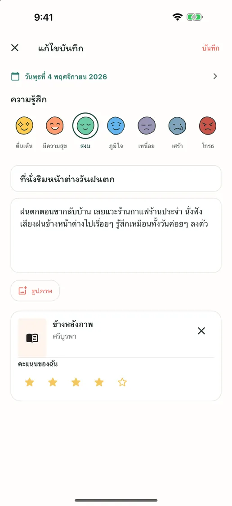
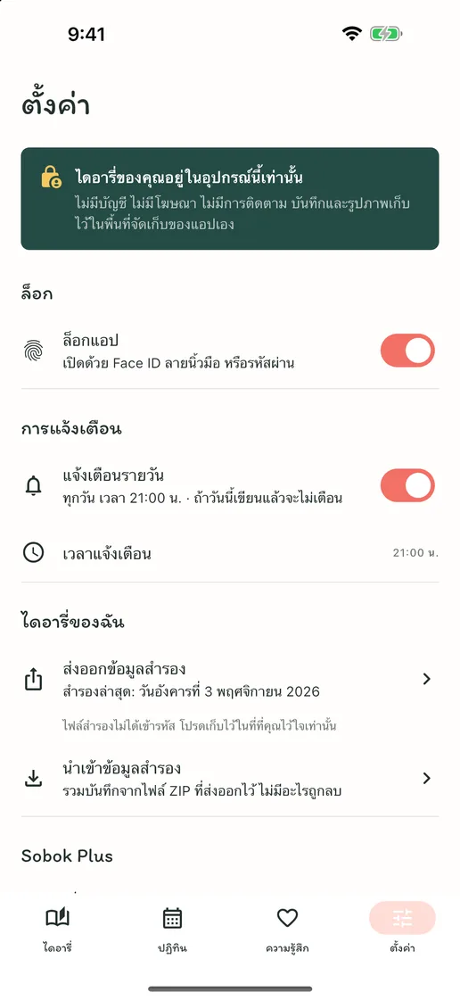
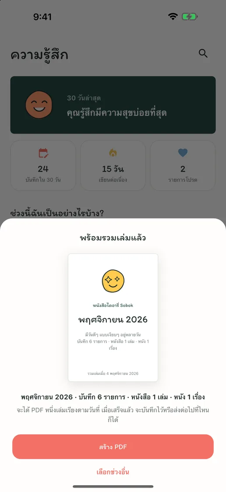
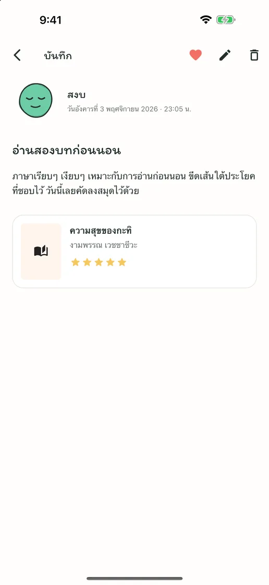
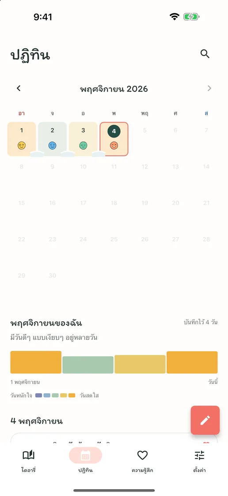
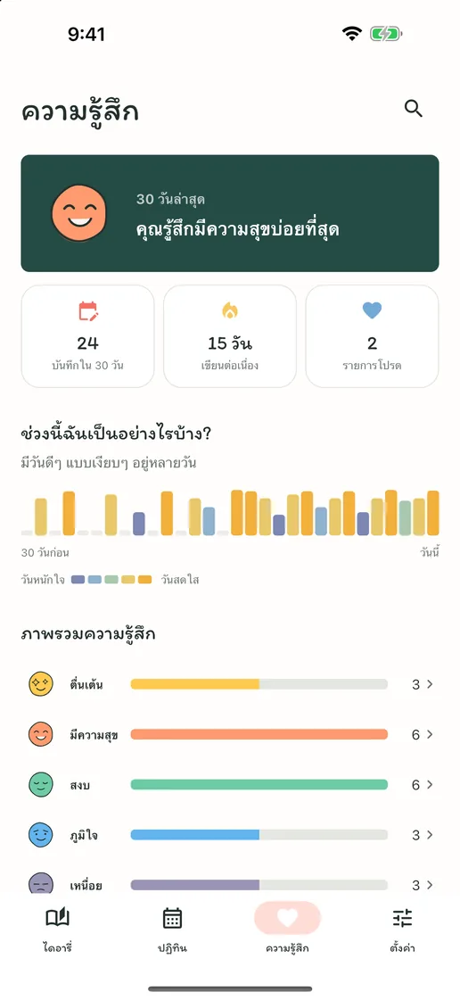

ความรู้สึกของวันนี้ ในแตะเดียว
แตะใบหน้าความรู้สึกหนึ่งในเจ็ดแบบ แล้วจะกลายเป็นบันทึกของวันนี้ เมื่อมีเรื่องอยากเล่า ก็เขียนเพิ่มสักบรรทัดในบันทึกเดียวกันได้
จดความรู้สึก หนังสือ และหนัง
ไม่มีบัญชี ไม่มีโฆษณา ไม่มีค่าสมาชิก แตะความรู้สึกเดียวก็เก็บวันนี้ไว้ได้ เรื่องยาวๆ รูปภาพ และบันทึกหนังสือกับหนังก็อยู่ในบันทึกเดียวกัน ทุกอย่างอยู่ในโทรศัพท์ของคุณ
เร็วๆ นี้บน App Store และ Google Playฟรี · มีการซื้อในแอป · iPhone และ Android · English · Deutsch · Tiếng Việt · Español · Bahasa Indonesia · 日本語 · 简体中文 · 繁體中文 · ไทย · Português · Français · 한국어


เขียนได้มากเท่าที่ต้องการ
วันที่ไม่มีอะไรจะเขียน แค่แตะความรู้สึกเดียวก็เก็บวันนี้ไว้ได้ วันที่อยากเขียน ทั้งชื่อเรื่อง เรื่องยาวๆ รูปภาพ และบันทึกถึงหนังสือที่เพิ่งอ่านหรือหนังที่เพิ่งดู ก็อยู่รวมกันในบันทึกเดียว
แตะใบหน้าความรู้สึกหนึ่งในเจ็ดแบบ แล้วจะกลายเป็นบันทึกของวันนี้ เมื่อมีเรื่องอยากเล่า ก็เขียนเพิ่มสักบรรทัดในบันทึกเดียวกันได้
ชื่อเรื่อง เรื่องยาวๆ รูปภาพ และคะแนน — ใส่เฉพาะสิ่งที่อยากเก็บในวันนั้น ค้นหาหนังสือที่เพิ่งอ่านหรือหนังที่เพิ่งดู หรือพิมพ์เองก็ได้
ทุกวันที่เขียน ความรู้สึกของวันนั้นจะค่อยๆ ลงบนปฏิทิน และวันที่เขียนต่อเนื่องกันจะเชื่อมกันเหมือนหิมะ เห็นได้ในแวบเดียวว่าสัปดาห์ไหนดี สัปดาห์ไหนหนัก
ภายในแอป
“Sobok-sobok” คือเสียงในภาษาเกาหลีของหิมะที่ค่อยๆ โปรยทับถมอย่างเงียบๆ — เหมือนวันเวลาของคุณที่ค่อยๆ สะสมอยู่ที่นี่ทีละวัน





ไม่ต้องสมัคร ไม่มีโฆษณา ไม่มีการติดตาม ไดอารี่ของคุณเก็บไว้ในอุปกรณ์เท่านั้น และคุณส่งออกบันทึกกับรูปภาพทั้งหมดเป็นไฟล์ ZIP แล้วนำกลับมาบนอุปกรณ์เครื่องใหม่ได้ การเขียน การค้นหา ปฏิทิน ล็อกแอป และการสำรองข้อมูลฟรีทั้งหมด มีเพียง Sobok Plus ที่รวมเล่มบันทึกเป็นหนังสือไดอารี่ PDF ซึ่งเป็นการซื้อครั้งเดียว